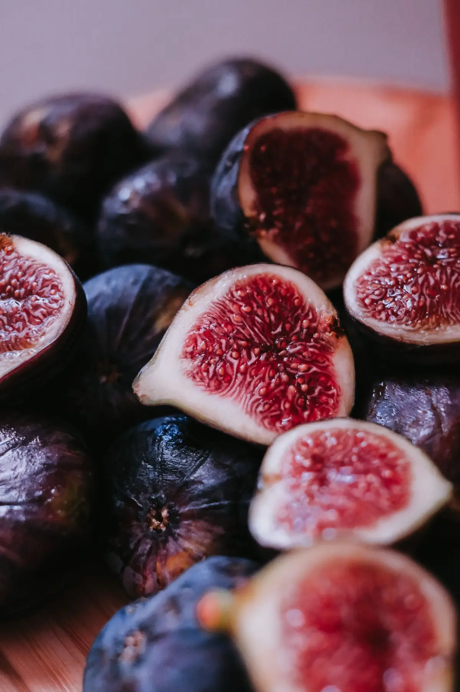

Lunel, HéraultFruits et légumesTerroirPoint relais colis
Primeur des 4 Saisons
Fruits, légumes et produits du terroir, au 322 boulevard Saint-Fructueux à Lunel. La boutique est aussi point relais colis.
Aujourd’hui : à l’étal, c’est l’automne.
L’étal
L’étal d’automne.
Chaque saison a ses fruits et ses légumes. Touchez un tas : l’étiquette se retourne et donne ses mois.

Cette semaine à l’étal
................................
................................
................................
Ce qui est sur l’étal cette semaine, c’est vous qui le dites : vous le changez vous-même, quand vous voulez.
Produits du terroir
....................
....................
....................
Les saisons
Douze mois dans le Sud.
Des repères généraux pour le Midi : fraises au printemps, tomates en été, raisin en automne, agrumes en hiver. L’étal de la boutique, lui, se décide chaque semaine.
Touchez un mois : toute la boutique y passe.
Le jeu
De quelle saison ?
Déballez le fruit de son papier de soie, puis rangez-le dans le bon cageot.
Touchez le papier pour le déballer.
0 sur 8du premier coup
Le terroir
Entre Camargue et garrigue.
Fruits, légumes et produits du terroir : c’est le métier de la boutique. Vos producteurs et vos produits du coin ont leur place sur le site, avec leur nom et leur histoire.
Point relais colis
Un colis à retirer ?
C’est ici aussi : la boutique est point relais colis. On passe prendre son paquet, on repart avec des fruits.
Réseau de colis....................
Retrait des colis....................
Six colis attendent sur l’étagère.
Les horaires.
Chaque jour a son étiquette. Les heures attendent les vôtres.
Et la suite
Votre site peut avoir autant de pages que vous voulez.
Cette maquette tient en une seule page pour donner l’idée. Rien n’est figé : vos textes, vos photos, vos couleurs, on ajuste tout ensemble.
C’est vous qui voyez.